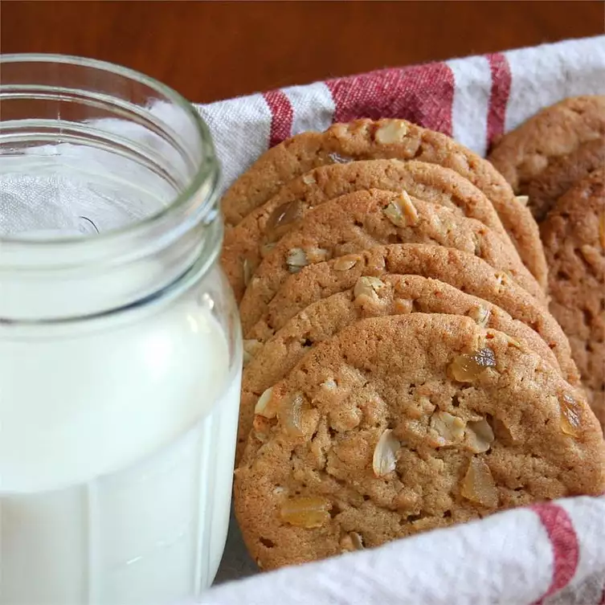

Oatmeal Peanut Butter Cookies

This based this recipe on Michele's Oatmeal Peanut Butter Cookies II, and had a WOW! moment when you added the ginger.
Ingredients
- 1/2 cup butter
- 1/2 cup shortening
- 1 cup peanut butter
- 1 cup packed brown sugar
- 2 eggs
- 1/2 teaspoon vanilla extract
- 1 1/2 cups all-purpose flour
- 2 teaspoons baking soda
- 1 teaspoon salt
- 1 teaspoon ground ginger
- 1 cup rolled oats
- 1 cup chopped crystallized ginger
Steps to make
- Preheat oven to 350 degrees F (175 degrees C).
- In a medium bowl, cream together the shortening, butter, brown
sugar and white sugar. Beat in the eggs, peanut butter and vanilla.
Combine the flour, baking soda, salt and ground ginger, stir into
the creamed mixture. Finally, stir in the rolled oats and candied
ginger. Drop by rounded teaspoonfuls onto an unprepared cookie sheet.
- Bake for 10 to 12 minutes in the preheated oven, until golden
brown. Remove from the baking sheet to cool on wire racks. Store
in an airtight container when cool.
Click the image to see the original post for this recipe.
Return Homepage